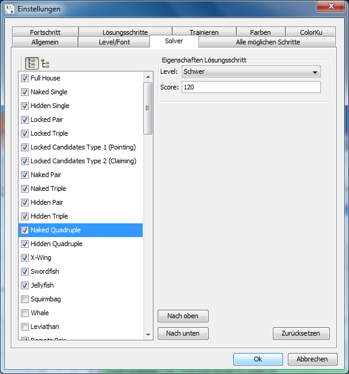
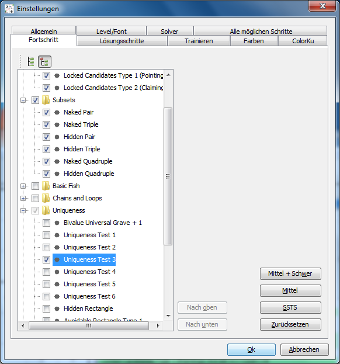
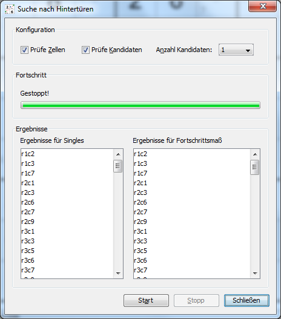
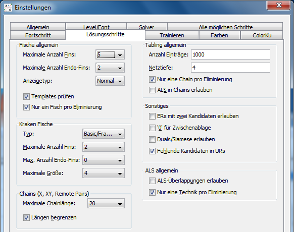

Kapitel 3: Solver konfigurieren
Inhaltsverzeichnis
- Lösungsstrategie
- Lösungstechniken (de-)aktivieren
- Reihenfolge der Lösungstechniken ändern
- Zweideutigkeiten und Beispiele
- Fortschrittsmaß
- Suche nach Hintertüren
- Optionen für Lösungstechniken
Lösungsstrategie
Der interne Solver von HoDoKu verwendet dieselbe prinzipielle Lösungsstrategie wie die Solver der meisten anderen Sudokuprogramme auch. Für die verfügbaren Lösungstechniken ist eine Reihenfolge definiert. Der Solver probiert jetzt eine Technik nach der anderen in genau dieser Reihenfolge aus. Sobald er einen möglichen Lösungsschritt findet, führt er ihn aus und beginnt die Suche wieder mit der ersten Technik.
Die Reihung der Techniken basiert auf ihrem Schwierigkeitsgrad (leichtere Techniken vor schwereren). Wie schwer eine Technik wirklich ist, ist natürlich oft genug Ansichtssache, daher bietet HoDoKu die Möglichkeit, die Reihenfolge der Lösungstechniken nach Belieben zu ändern (siehe unten).
Die Folge dieser Strategie ist, dass der Solver niemals eine komplizierte Technik verwendet, wenn noch eine einfachere verfügbar ist. Das bedeutet wiederum, dass er nur sehr selten die kürzest mögliche Lösung findet. Im Normalfall wird die Lösung mit den einfachsten Techniken gefunden, unabhängig davon, wie oft diese Techniken angewendet werden müssen.
Die Standardreihenfolge kann unter "Bearbeiten|Einstellungen|Solver" nach Drücken von "Zurücksetzen" eingesehen werden. Mit Version 2.0 von HoDoKu listet dieser Dialog 91 verschiedene Techniken, von denen einige allerdings zur selben Familie gehören (z.B. allein 42 verschiedene Fish-Varianten). Andere Techniken haben nur einen Eintrag in der Liste, können aber unterschiedliche Lösungsschritte produzieren (der Eintrag "Nice Loops/AIC" kann z.B. "Discontinuous Nice Loops", "Continuous Nice Loops" und "AICs" erzeugen).
Lösungstechniken (de-)aktivieren
Lösungstechniken können aktiviert oder deaktiviert werden. Eine deaktivierte Technik wird vom Solver nicht angewendet.
Einige Techniken benötigen für die Suche sehr viel Zeit und sind daher standardmäßig deaktiviert (z.B. alle größeren Fisch-Typen). Werden solche Techniken aktiviert, kann die Zeit, die der Solver zum Lösen eines Sudokus benötigt, sehr stark ansteigen.
Techniken, die dem Spieler nicht besonders liegen, können natürlich ebenso deaktiviert werden (sie werden dann auch vom Hinweis-System nicht angeboten). Eine Technik ein- oder auszuschalten benötigt zwei Arbeitsschritte: Zunächst muss die Technik angeklickt werden, damit sie hervorgehoben wird. HoDoKu füllt die Eingabeelemente unter "Eigenschaften Lösungschritt" mit den Daten der Technik. Sobald eine Technik hervorgehoben ist, schalten weitere Klicks auf die Zeile die Checkbox ein bzw. aus.
Alle Änderungen, die in diesem Dialog durchgeführt werden, werden bei Programmende automatisch in eine Konfigurationsdatei gespeichert (siehe Konfigurationen und Sudokus speichern/laden).
Klick auf den "Baum"-Knopf oberhalb der Liste mit den Lösungstechniken schaltet die Anzeige in den Kategorie-Modus. Techniken werden als Baum nach Kategorien gruppiert angezeigt. Das macht es einfach, ganze Gruppen von Techniken mit einem Klick ein- oder auszuschalten (z.B. alle Chains oder alle Mutant Fische). Die Reihenfolge der Techniken (siehe unten) kann in der Baumansicht nicht verändert werden.
Reihenfolge der Lösungstechniken ändern
Um die Reihenfolge der Lösungstechniken zu ändern muss ebenfalls die entsprechende Technik angeklickt werden. Sobald sie hervorgehoben wurde, können die Knöpfe "Nach oben" und "Nach unten" dazu verwendet werden die Position der Technik in der Liste zu verändern.
Achtung: Wird die Reihenfolge der Lösungstechniken geändert, kann das zu einer völlig anderen Lösung führen und damit auch die Bewertung des Sudokus verändern (siehe Bewertung und Schwierigkeitsstufen).
Andererseits wirken sich Änderungen der Lösungsreihenfolge nicht nur auf den Solver, sondern auch auf das Hinweis-System aus. Techniken, die dem Spieler besonders liegen, sollten daher in der Liste weiter nach oben verschoben werden. Unbeliebte Techniken sollten besser deaktiviert werden. Soll eine Technik nur als letzter Strohhalm zum Einsatz kommen, sollte sie ans Ende der Liste verschoben werden.
Zweideutigkeiten und Beispiele
Viele Techniken existieren unter mehr als einem Namen. Ein Skyscraper beispielsweise ist sowohl ein Turbot Fish als auch eine X-Chain. Außerdem kann er als Kombination zweier Sashimi X-Wings gesehen werden. Einige Empty Rectangles können ebenso Turbot Fishes oder Finned Mutant X-Wings sein.
Durch Verändern der Reihenfolge bzw. (de-)aktivieren von Lösungsschritten kann daher erreicht werden, dass bestimmte Schritte nur unter einem bestimmten Namen gelistet werden. Als Beispiel sollen die folgenden Techniken in ihrer Standardreihenfolge dienen:
- 2-String-Kite
- Skyscraper
- Turbot Fish
- Empty Rectangle
Empty Rectangles werden nur angezeigt, wenn in der Box, die das ER enthält, mindestens drei Kandidaten gesetzt sind. ERs mit nur zwei Kandidaten können über eine Option aktiviert werden. Da solche ERs aber immer auch Turbot Fishes sind und Turbot Fish vor Empty Rectangle kommt, werden diese Schritte immer als Turbot Fish gelistet und die oben genannte Option hat scheinbar keinerlei Effekt. Wenn man wirklich ERs mit zwei Kandidaten als ERs gelistet sehen will, muss entweder Empty Rectangle vor Turbot Fish geschoben werden oder Turbot Fish muss ganz deaktiviert werden. Ebenso bewirkt das Verschieben von Turbot Fish vor 2-String-Kite oder Skyscraper, dass diese Techniken nicht mehr vorkommen, da alle möglichen Eliminierungen bereits vom Turbot Fish Code erkannt werden.
Fortschrittsmaß
Ausdrücke und Definitionen
Lösungsschritte können danach beurteilt werden, wie weit sie die Lösung des Sudokus voranbringen. Das wird als "Fortschrittsmaß" des Lösungsschritts bezeichnet. Um dieses Fortschrittsmaß zu berechnen, wird das Sudoku mit einem konfigurierbaren Set an Techniken gelöst. Der Screenshot zeigt den Konfigurationsdialog für diese Techniken. Techniken können nur gewählt werden, wenn ihr Schwierigkeitsgrad maximal "Schwer" ist. Muss unbedingt eine "Unfaire" oder "Extreme" Technik gewählt werden, muss zuerst ihr Schwierigkeitsgrad angepasst werden.
In der Listenansicht kann auch die Reihenfolge der Techniken unabhängig von der Reihenfolge im normalen Solver geändert werden.
Um die Konfiguration weiter zu vereinfachen stehen mehrere Standardeinstellungen zur Verfügung:
- Default: Singles, Intersections und Subsets
- Mittel + Schwer: Alle Schritte, die als "Mittel" oder "Schwer" eingestuft sind
- Mittel: Alle Schritte, die als "Mittel" eingestuft sind
- SSTS (Simple Sudoku Technique Set): Full House, Naked Single, Hidden Single, Locked Pair, Naked Pair, Locked Candidates, Locked Triple, Naked Triple, Naked Quadruple, Hidden Pair, X-Wing, Swordfish, Simple Colors, Multi Colors, Hidden Triple, XY-Wing, Hidden Quadruple (in der oben angegebenen Reihenfolge). Diese Auswahl an Techniken wird in vielen Sudoku-Foren verwendet, um ein Sudoku bis zu einem "interessanten" Zustand zu lösen
Das Fortschrittsmaß für einen Lösungsschritt besteht aus drei unabhängigen Werten:
- Anzahl direkter Singles: Anzahl an Singles, die verfügbar sind, nachdem der Schritt ausgeführt wurde, ohne dass andere Schritte notwendig sind
- Anzahl Singles: Gesamtanzahl an Singles nach Anwendung des Schrittes und unter Verwendung des gesamten Sets an Techniken für das Fortschrittsmaß
- Score: Der Score aller Schritte (nur Fortschrittsmaß) nach Anwendung des Lösungsschritts. Kann das Sudoku nicht gelöst werden, wird der Score für "Gebe auf" nicht mitgerechnet
Lösen bis
Die Einstellungen in diesem Dialog werden auch von der "Lösen bis"-Funktion im Hinweis-Bereich verwendet. Wird dieser Knopf gedrückt, wird die normale Lösungsstrategie angewendet. Wenn die jeweils nächste gefundene Technik als Fortschrittsmaß-Technik definiert ist, wird der Lösungsschritt automatisch angewendet und der nächste Schritt wird gesucht. Der Prozess stoppt, sobald die erste Technik gefunden wurde, die hier nicht gewählt ist.
Suche nach Hintertüren
Die meisten Sudokus, auch ganz schwere, haben eine oder mehrere Hintertüren: Eine Hintertür ist eine Zelle oder eine Kombination aus Zellen, die, wenn gesetzt, die Lösung auf Singles reduziert. Die meisten Sudokus haben Hintertüren, die nur aus einer einzigen Zelle bestehen. Extrem schwere Sudokus benötigen zwei Zellen um leicht zu werden. Das berühmte Easter Monster (von JPF im April 2007 im New Sudoku Player's Forum gepostet) benötigt sogar drei bestimmte Zellen, bevor es sich mit Singles lösen lässt.
HoDoKu kann verschiedene Typen von Hintertüren berechnen: Hintertüren für Zellen (sowohl mit Singles als auch mit den Lösungsschritten für das Fortschrittsmaß) und Hintertüren für Kandidaten oder Kombinationen von Kandidaten.
Bei der Suche werden zunächst Einzelzellen getestet. Können keine Hintertüren gefunden werden, wird die Suche mit Zellpaaren und wenn nötig auch mit Dreierkombinationen fortgesetzt. Diese Suche kann unter Umständen sehr lange dauern.
Wenn nach Kandidaten-Hintertüren gesucht wird, kann die Suchtiefe mit einer Combobox eingestellt werden. Wie bei den Zellen stoppt die Suche, sobald Hintertüren gefunden wurden. Da es normalerweise wesentlich mehr Kandidaten als ungelöste Zellen gibt, bedeutet eine Suchtiefe von 3, dass HoDoKu eine enorme Anzahl an Kandidatenkombinationen probieren muss, was naturgemäß auch sehr lange dauert.
Optionen für Lösungstechniken
Jede Lösungstechnik ist einem Schwierigkeitsgrad zugeordnet ("Level") und hat einen Score. Der Sinn dieser Eigenschaften wird detailliert in Kapitel 4: Bewertung und Schwierigkeitsstufen erklärt. Zusätzlich kann das Verhalten einiger Techniken mit den Optionen in "Bearbeiten|Einstellungen|Lösungsschritte" geändert werden:
Fische allgemein (Optionen beeinflussen alle Fisch-Typen außer Kraken Fish):
- Maximale Anzahl Fins: Maximale Anzahl an Fins ("Flossen"), die bei der Suche nach Finned Fish zugelassen ist. Obwohl eine größere Anzahl an Flossen möglich ist, ist es sehr unwahrscheinlich, dass ein solcher Fisch Eliminierungen bewirken kann (bei einem Finned Fish muss der eliminierte Kandidat alle Flossen sehen). Eine Erhöhung dieses Wertes bewirkt eine drastische Vergrößerung der Laufzeit der Fischsuche.
- Maximale Anzahl Endo-Fins: Maximale erlaubte Anzahl an Endo-Fins bei der Fischsuche. Eine große Anzahl an Endo-Fins benötigt speziell bei der Suche nach großen Mutant Fischen extrem lange Rechenzeiten ohne deutlich bessere Ergebnisse zu erzielen.
- Anzeigetyp: "Normal" zeigt Fische wie in den Versionen vor 2.0 an. "Zahlen" und "Zellen" geben zusätzliche Informationen über die Architektur des Fisches.
- Templates prüfen: Templates sind eine Möglichkeit zu prüfen, ob Techniken, die sich nur auf eine Ziffer beziehen, prinzipiell noch Eliminierungen bewirken können. Achtung: Ein negativer Template-Check garantiert, dass kein in HoDoKu implementierter Fisch-Typ (außer Kraken) eine Eliminierung liefern kann. Das Gegenteil ist allerdings nicht notwendigerweise wahr.
- Nur ein Fisch pro Eliminierung: Wenn gewählt wird für jede mögliche Kombination an Eliminierungen jeweils nur der kleinste verfügbare Fisch angezeigt.
Kraken Fische:
- Typ: Der Typ des im Kraken Fisch enthaltenen Fisches (Basic, Basic und Franken oder alle Fischtypen).
- Maximale Anzahl Fins: Maximale Anzahl an Fins für den Kraken Fisch.
- Max. Anzahl Endo-Fins: Maximale Anzahl an Endo-Fins für den Kraken Fisch.
- Maximale Größe: Maximale Anzahl an Base/Cover-Sets für den Fisch.
Chains allgemein (Optionen beeinflussen X-Chains, XY-Chains und Remote Pairs):
- Maximale Chainlänge: Maximale Anzahl an Links in einer Chain (Achtung: eine XY-Chain mit fünf Zellen hat neun Links).
- Maximale Nice-Loop-Länge: Diese Option hat keinerlei Auswirkungen mehr und wird in späteren Versionen von HoDoKu entfernt werden.
Tabling allgemein (Optionen beeinflussen Nice Loops, AICs, Forcing Chains/Nets und Kraken Fish):
- Anzahl Einträge: maximale Anzahl an möglichen Auswirkungen pro Voraussetzung. Eine niedrige Zahl in diesem Feld bewirkt, dass weniger Chains gefunden werden können. Eine große Zahl vergrößert auch HoDoKus Speicherbedarf und verlangsamt die Ausführung des Solvers.
- Netztiefe: Legt fest, wie weit bei einer Netzsuche in die Zukunft geschaut werden soll. Je größer diese Nummer ist, desto komplizierter werden auch die gefundenen Forcing Nets und die Ausführungszeit steigt (das führt allerdings nicht notwendigerweise zu mehr Eliminierungen).
- Nur eine Chain pro Eliminierung: Wenn gewählt, werden Chains nur dann eingeschrieben, wenn für diese Eliminierung noch keine Chain existiert oder wenn die existierende Chain länger ist als die neue.
- ALS in Chains erlauben: ALS als Knoten in Chains vergrößern zwar die Anzahl verfügbarer Chains, benötigen jedoch auch viel Rechenzeit bei der Suche. Außerdem existieren für die meisten der möglichen zusätzlichen Chains äquivalente ALS-Techniken (ALS-XZ, ALS-XY oder ALS Chains).
Sonstiges:
- ERs mit zwei Kandidaten erlauben: Wenn diese Option nicht gewählt ist, werden Empty Rectangles nur gefunden, wenn sie mindestens zwei Kandidaten im Block, der das ER enthält, besitzen. ERs mit nur zwei Kandidaten werden als Turbot Fish oder als X-Chain gelistet.
- '0' für Zwischenablage: Verwendet '0' statt '.' beim Export von Sudokus in die Zwischenablage.
- Duals/Siamese erlauben: Erlaubt das Finden von Dual Empty Rectangles, Dual 2-String-Kites und Siamese Fish. Die Fähigkeiten des Solvers werden dadurch nicht beeinflusst: Alle Duals/Siamese Fishes werden auch als zwei getrennte Lösungsschritte gefunden.
- Fehlende Kandidaten in URs: Wenn gewählt, muss das UR nicht komplett sein (es müssen nicht in allen UR-Zellen alle UR-Kandidaten vorhanden sein, siehe Unique Rectangles mit fehlenden Kandidaten).
ALS allgemein:
- ALS-Überlappungen erlauben: Ab Version 1.2 sind Überlappungen zwischen nicht benachbarten ALS in ALS Chains generell erlaubt. Diese Option erlaubt zusätzlich Überlappungen zwischen benachbarten ALS (führt zu drastisch erhöhten Rechenzeiten, produziert jedoch auch interessante Lösungsschritt-Varianten).
- Nur eine Technik pro Eliminierung: Nimmt für jede Kombination von Eliminierungen jeweils nur den einfachsten verfügbaren ALS-Schritt (genauer: Den Schritt mit den wenigsten ALS-Zellen insgesamt).
Copyright © 2008-12 von Bernhard Hobiger
Zuletzt geändert am 5. Mai 2025 von shorty#3746
(basierend auf dem 1to9only Github-Repo)
Alles Material auf dieser Site unterliegt der GNU FDLv1.3.